Last updated: 2026-11-19
Live track record: 1191 closed picks, 34% win rate. Average predicted probability 42% vs actual 42% (33 decided). 102 still open. Full track record →
| Ticker | Sector | Dir | Price | RSI(7) | % vs 20D | Volume | Entry | Stop | Target | R:R | Avg Hold | Probability | Hist. win rate | Sample | Earnings |
|---|---|---|---|---|---|---|---|---|---|---|---|---|---|---|---|
| NVDA | Information Technology | LONG | $145.98 | 12.9 | -21.4% | 1.2x | $145.98 | $138.68 | $185.73 | 5.45:1 | 7.8 | 34% | 64% | 14 | 97d |
| FCX | Materials | LONG | $49.08 | 16.7 | -19.0% | 1.64x 🔥 | $49.08 | $46.63 | $60.58 | 4.69:1 | 7.4 | 20% | 50% | 14 | 63d |
| UNH | Health Care | LONG | $330.48 | 13.8 | -17.1% | 3.12x 🔥 | $330.48 | $313.96 | $398.43 | 4.11:1 | 10.5 | 20% | 50% | 12 | 54d |
| MU | Information Technology | LONG | $690.44 | 32.2 | -13.8% | 1.07x | $690.44 | $655.92 | $800.8 | 3.2:1 | 8.7 | 40% | 55% | 11 | 34d |
| VEEV | Health Care | LONG | $262.92 | 9.0 | -13.5% | 2.0x 🔥 | $262.92 | $249.77 | $303.95 | 3.12:1 | 7.7 | 48% | 55% | 11 | 14d |
| ILMN | Health Care | LONG | $200.65 | 33.5 | -13.2% | 0.73x | $200.65 | $190.62 | $231.18 | 3.04:1 | 5.4 | 43% | 50% | 10 | 77d |
| MRNA | Health Care | LONG | $199.33 | 31.0 | -11.6% | 0.72x | $199.33 | $189.36 | $225.51 | 2.63:1 | 8.8 | 56% | 56% | 9 | 85d |
| EXPE | Consumer Discretionary | LONG | $239.19 | 29.5 | -11.3% | 0.55x | $239.19 | $227.23 | $269.52 | 2.54:1 | 8.5 | 30% | 53% | 15 | 84d |
| MPC | Energy | LONG | $367.9 | 26.5 | -10.4% | 0.89x | $367.9 | $349.5 | $410.54 | 2.32:1 | 10.4 | 73% | 80% | 10 | 75d |
| HUM | Health Care | LONG | $380.07 | 26.5 | -10.1% | 0.96x | $380.07 | $361.07 | $422.83 | 2.25:1 | 6.4 | 53% | 53% | 15 | 83d |
| DVN | Energy | LONG | $42.05 | 30.0 | -9.5% | 0.9x | $42.05 | $39.95 | $46.48 | 2.11:1 | 8.0 | 74% | 82% | 11 | 89d |
| NWSA | Communication Services | LONG | $25.31 | 24.4 | -9.5% | 0.79x | $25.31 | $24.04 | $27.97 | 2.11:1 | 7.7 | 46% | 69% | 13 | 77d |
| VLO | Energy | LONG | $338.46 | 28.5 | -9.5% | 0.94x | $338.46 | $321.54 | $373.99 | 2.1:1 | 10.4 | 76% | 83% | 6 | 70d |
| LRCX | Information Technology | LONG | $203.68 | 33.2 | -9.4% | 0.94x | $203.68 | $193.5 | $224.86 | 2.08:1 | 5.0 | 35% | 50% | 8 | 69d |
LONG = oversold, expected to bounce back up toward the 20-day average. SHORT = overbought, expected to pull back down toward the 20-day average. Stop-loss = 5% against the position. Probability = this ticker's historical win rate minus penalties when the chart structure is broken (hover for reasons). 🔥 means volume was 1.5x+ the 20-day average. Tickers with earnings due within 3 days are excluded. Macro events pulled live from a public economic calendar feed (high-impact USD events only). Mechanical screen only — check news before acting. Not financial advice.
Probability 64% → 34%: broke below 60d swing low (-15); below 200-day avg, downtrend (-8); lower highs and lower lows (-7)
Earlier signals on NVDA: 2026-11-17: ❌ hit stop -5.0% 2026-11-12: ❌ hit stop -5.0% 2026-11-10: ❌ hit stop -10.0%
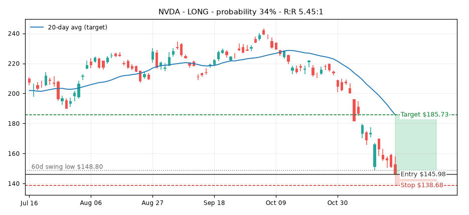
Probability 50% → 20%: broke below 60d swing low (-15); below 200-day avg, downtrend (-8); lower highs and lower lows (-7)
Earlier signals on FCX: 2026-11-18: ⏳ still open 2026-11-16: ❌ hit stop -5.5% 2026-11-05: ❌ hit stop -5.0%
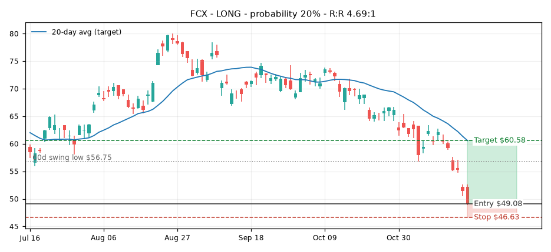
Probability 50% → 20%: broke below 60d swing low (-15); below 200-day avg, downtrend (-8); lower highs and lower lows (-7)
Earlier signals on UNH: 2026-11-18: ❌ hit stop -5.0%
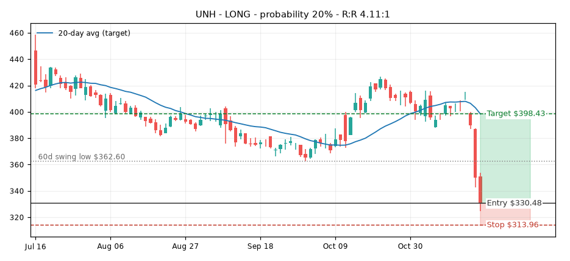
Probability 55% → 40%: below 200-day avg, downtrend (-8); lower highs and lower lows (-7)
Earlier signals on MU: 2026-11-05: ⏳ still open 2026-11-04: ❌ hit stop -5.6% 2026-11-02: ❌ hit stop -5.0%
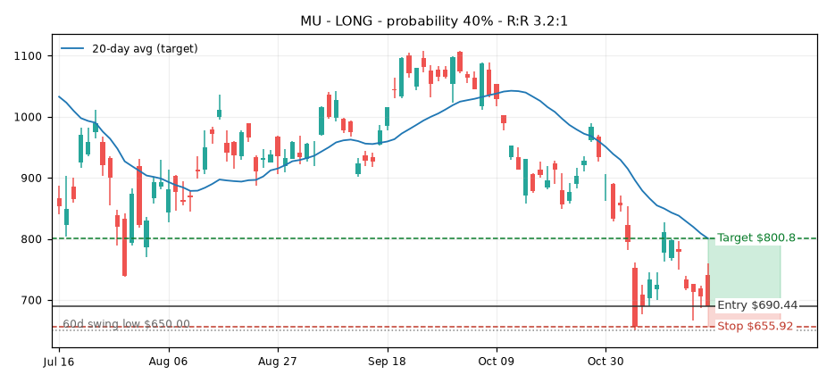
Probability 55% → 48%: lower highs and lower lows (-7)
Earlier signals on VEEV: 2026-11-18: ❌ hit stop -5.0% 2026-09-03: ⌛ expired +3.9% 2026-09-02: ⌛ expired -0.4%
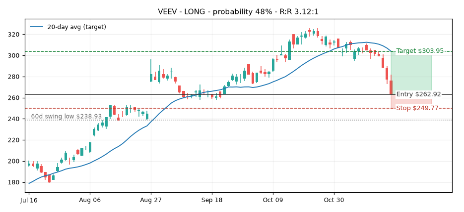
Probability 50% → 43%: lower highs and lower lows (-7)
Earlier signals on ILMN: 2026-11-16: ⏳ still open 2026-11-12: ❌ hit stop -5.0% 2026-11-05: ❌ hit stop -5.0%
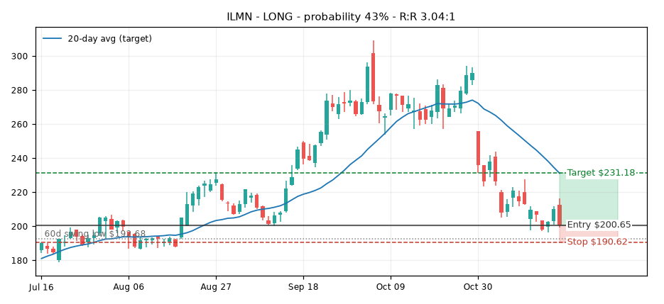
Probability 56%: no structure warnings.
Earlier signals on MRNA: 2026-11-17: ❌ hit stop -5.4% 2026-10-22: ✅ hit target +13.7% 2026-09-08: ❌ hit stop -5.0%
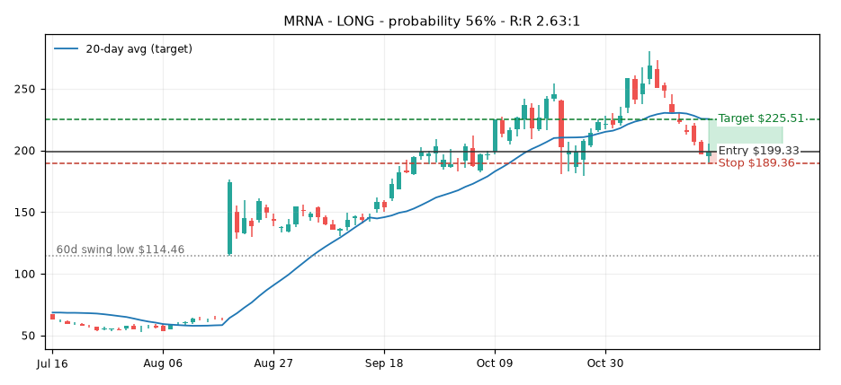
Probability 53% → 30%: broke below 60d swing low (-15); below 200-day avg, downtrend (-8)
Earlier signals on EXPE: 2026-11-18: ⏳ still open 2026-11-10: ❌ hit stop -5.2% 2026-09-24: ✅ hit target +13.3%
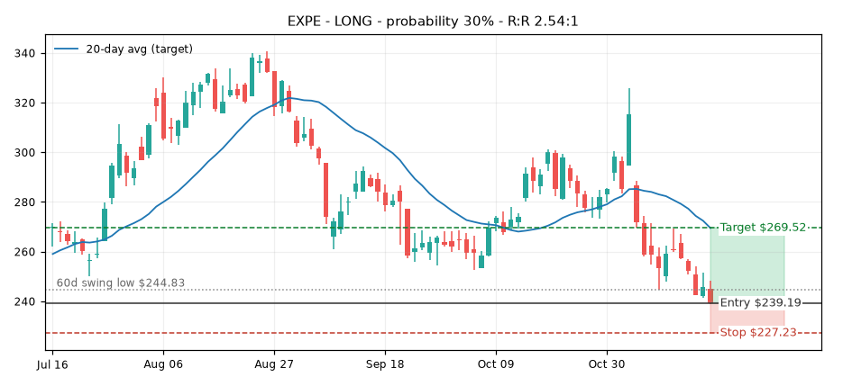
Probability 80% → 73%: lower highs and lower lows (-7)
Earlier signals on MPC: 2026-11-04: ❌ hit stop -5.0% 2026-08-25: ❌ hit stop -5.5% 2026-08-24: ❌ hit stop -5.6%
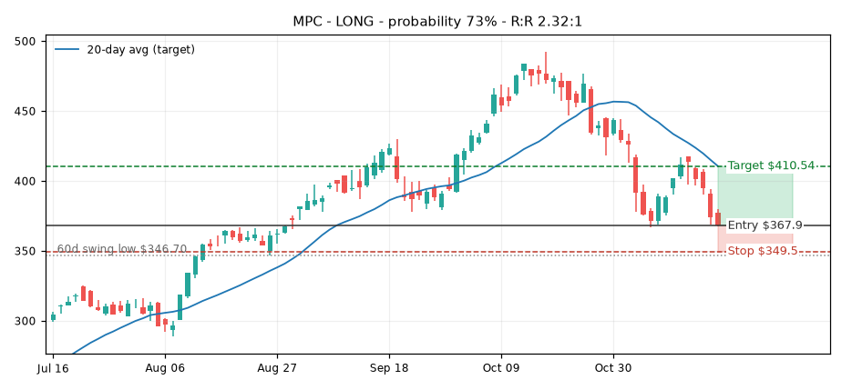
Probability 53%: no structure warnings.
Earlier signals on HUM: 2026-11-18: ⏳ still open 2026-10-09: ⌛ expired +2.1%
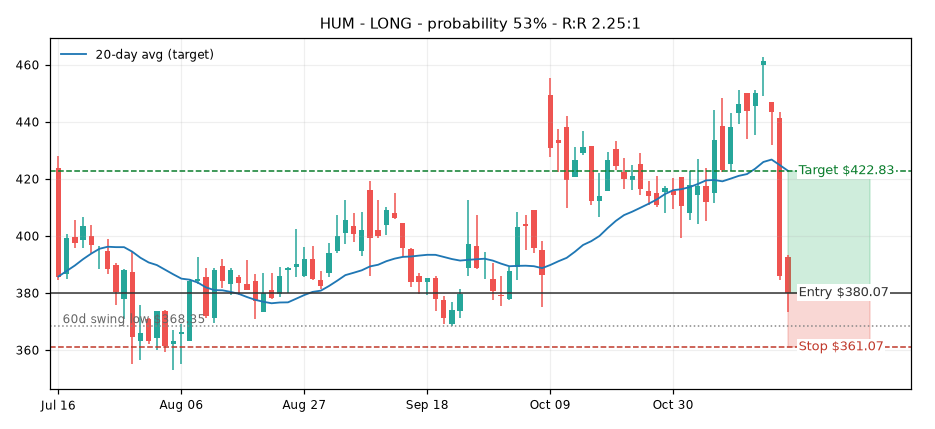
Probability 82% → 74%: below 200-day avg, downtrend (-8)
Earlier signals on DVN: 2026-11-06: ⏳ still open 2026-08-24: ❌ hit stop -5.0% 2026-08-24: ❌ hit stop -5.4%
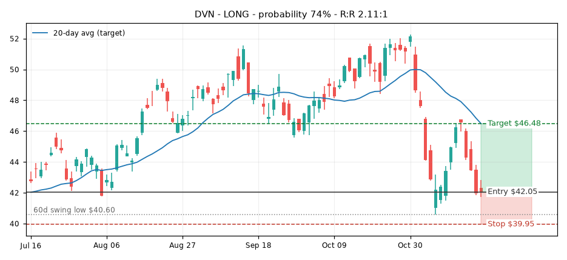
Probability 69% → 46%: broke below 60d swing low (-15); below 200-day avg, downtrend (-8)
Earlier signals on NWSA: 2026-11-05: ❌ hit stop -5.0% 2026-08-25: ✅ hit target +6.0% 2026-08-24: ⌛ expired +3.7%
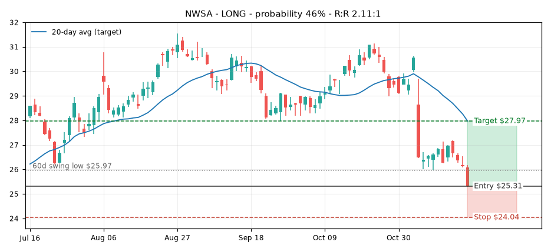
Probability 83% → 76%: lower highs and lower lows (-7)
Earlier signals on VLO: 2026-11-06: ⏳ still open 2026-11-04: ❌ hit stop -5.0% 2026-11-02: ❌ hit stop -5.0%
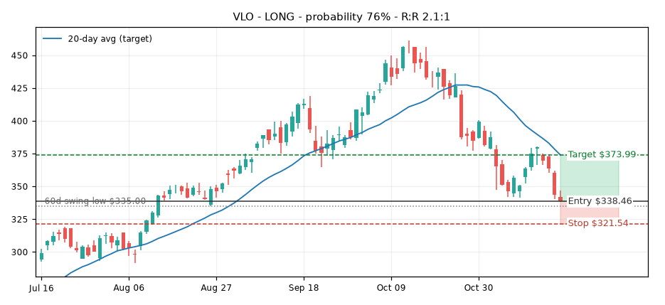
Probability 50% → 35%: below 200-day avg, downtrend (-8); lower highs and lower lows (-7)
Earlier signals on LRCX: 2026-11-05: ⏳ still open 2026-11-04: ❌ hit stop -5.6% 2026-11-03: ❌ hit stop -9.1%
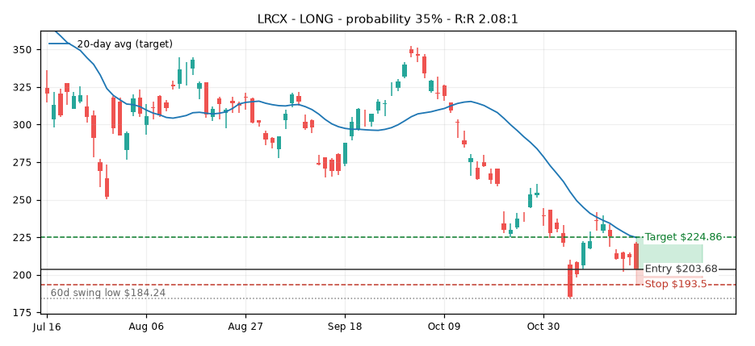